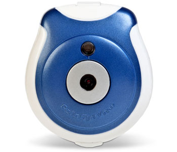

The CatCam I use is called a 'Pets eye view' and is available from Iwantoneofthose.
Specifications
It can take up to 40 photographs at VGA qualilty, every 1, 5 or 15 minute intervals. It can be easily attached to a dog or a cat's collar. There is a space on the back for your address should it become detached. It connects to your computer via usb, which also charges the built-in, non-removable battery. |
 |